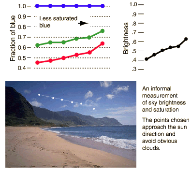

Sky Saturation and Brightness
As a qualitative examination of sky brightness and the saturation of the blue sky color, measurements of the color of the sky photograph were made from a computer monitor using Adobe Illustrator's color tools. None of the data should be taken as quantitatively reliable since the original photo had been transformed several times, and the measurements were taken from a non-calibrated computer monitor. Nevertheless, it might be useful as an example of the progressions of sky color.

A series of points on the sky image were chosen starting from the left, indicated by the white dots superimposed on the image above. It is clear to the eye that the progression leads to a brighter sky and to a blue color which is less saturated, or more pastel. Measurements of the color and brightness were made at each point based on amounts of red, green and blue present. In the graph at upper left, the blue brightness was normalized to 1 and the red and green expressed as a fraction of the blue. One result was that the green was significantly brighter than the red. This is consistent with Rayleigh scattering which emphasizes the shorter wavelengths. Another result was that the red and green increased as a fraction of the blue, indicating that the color was becoming less saturated. This can be interpreted as blue mixed with an increasing fraction of white light, which is consistent with the light being a combination of Rayleigh and Mie scattering. As you approach the sun's direction, the Mie scattering accounts for a larger fraction of the total light, and the Mie scattered light is essentially white. The graph of overall brightness above is just the sum of all three colors, with a maximum of 1 being white on the monitor. The increasing brightness along the path of the data is again consistent with a combination of Rayleigh and Mie scattering. The Mie scattering has a strong forward lobe and increases as you approach the sun's direction.
|
Index
Scattering concepts
Atmospheric optics concepts |